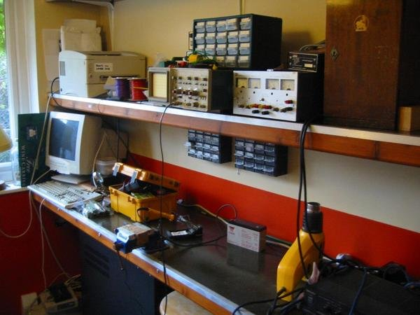
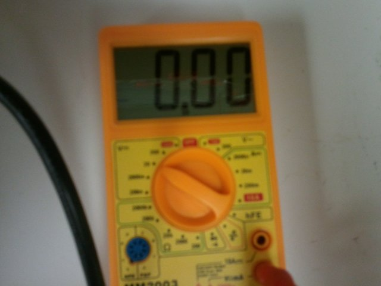
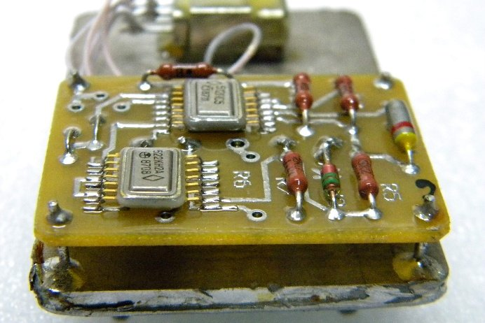
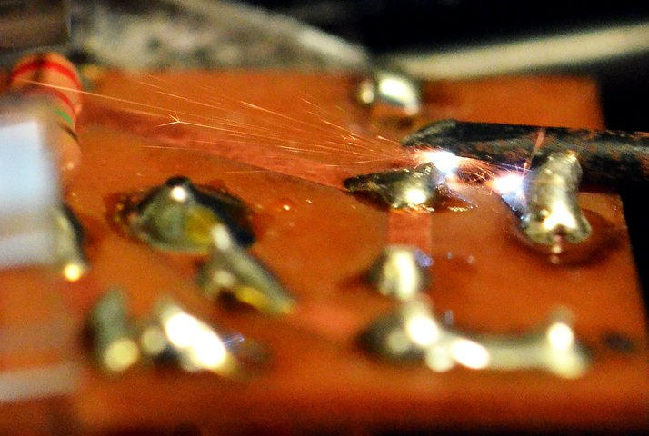
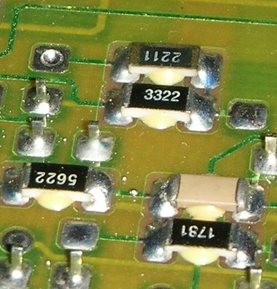
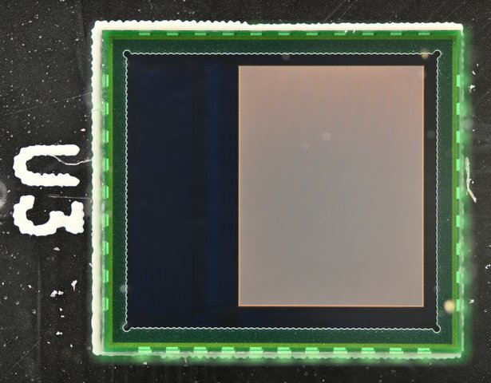
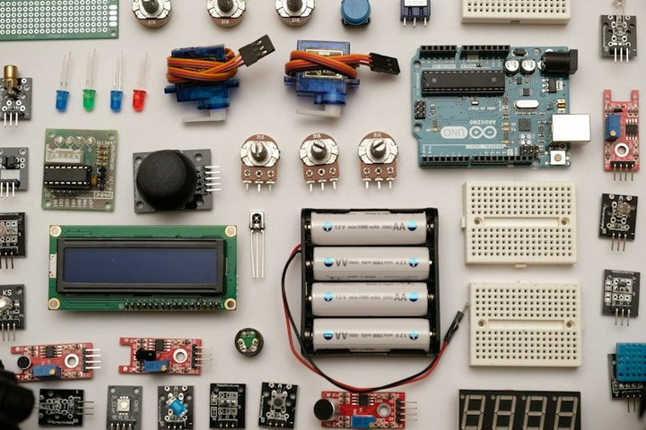
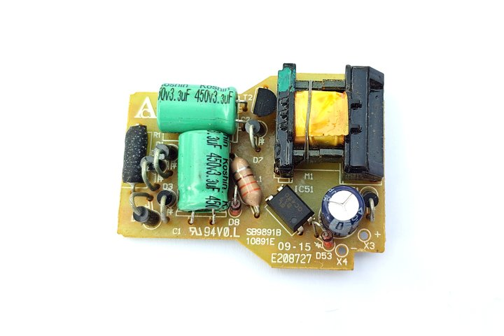
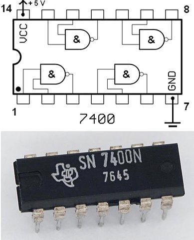
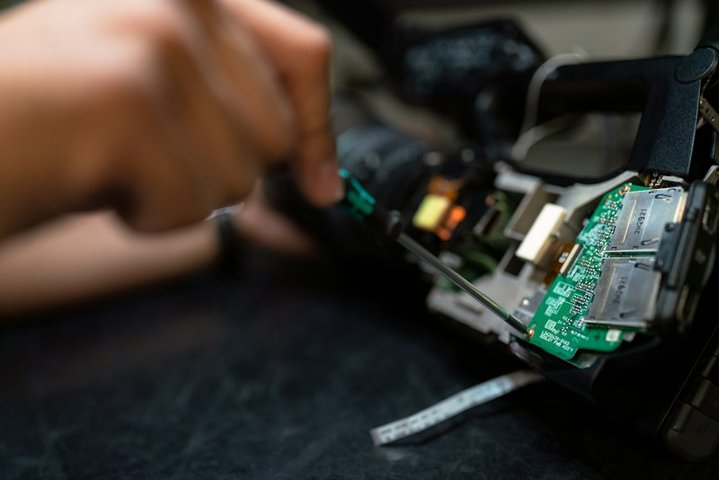

El Asistente Manos Libres en el Taller
Por qué no usamos teclado ni PC en el banco de trabajo
El Problema Real
Tener las manos ocupadas con el soldador, el multímetro o la pinza impide tipear en un teclado o buscar textos largos en Google.
La Solución Inmediata
Gemini nativo en Android (activación con 'Hey Google' o botón lateral) y ChatGPT por voz. Consultas habladas en lenguaje coloquial.
Regla de Oro de Banco
No busques palabras clave como en 2005. Dialogá con la IA exactamente igual que si le preguntaras a un colega con 20 años de experiencia sentado a tu lado.

La Fórmula de la Consulta Técnica Hablada
Los 3 elementos indispensables para obtener respuestas certeras
1. Contexto Exacto
Decir siempre artefacto, marca y modelo comercial completo (ej. 'Lavarropas Drean Next 8.14').
2. Síntoma de Comportamiento
Qué hace exactamente y qué no hace (destello de LEDs, código de error en display o momento exacto del ciclo donde se detiene).
3. Mediciones Físicas Reales
Valores en Ohms de bobinados o sensores, y voltajes medidos con multímetro en bornes antes de consultar.

Caso Real 1: Heladeras No Frost (Descarte en 3 Minutos)
Evaporador congelado en bloque y heladera que no enfría abajo
El Error Típico
Cambiar la placa electrónica sin medir los componentes periféricos de deshielo.
Interrogatorio por Voz
Dictarle a la IA los valores de los sensores NTC a temperatura ambiente y sumergidos en agua con hielo (tabla de curva kΩ).
Secuencia de Descarte Lógico
Bimetal (continuidad en frío) -> Fusible térmico (0 ohms) -> Resistencia de descongelamiento (200-400 ohms) -> Relé de placa.

Práctica de Taller y Consigna de la Clase 1
Poniendo a prueba el asistente con una falla real de tu banco
Paso 1: Activación Manos Libres
Verificar que el teléfono despierte con la voz teniendo guantes o herramientas en la mano.
Paso 2: Dictado de Caso Pendiente
Elegir un artefacto que tengas parado en el taller y dictar los 3 elementos clave.
Paso 3: Validación Crítica
Evaluar si la respuesta de la IA tiene sentido físico o si necesita que le aportes una medición más.

La Cámara del Celular como Lupa de Diagnóstico
Cómo los modelos de visión artificial leen lo que el ojo no ve
Superando la Lupa Tradicional
Los modelos multimodales pueden ampliar serigrafías microscópicas, códigos SMD borrados y fisuras térmicas.
Identificación de Etapas
La IA reconoce de un vistazo: Fuente primaria, etapa de filtrado, oscilador PWM, acoplamiento óptico y etapa de potencia.
Detección de Daños Térmicos
Reconocimiento de pistas recalentadas, soldaduras frías o electrolíticos hinchados a partir de una foto nítida.

Técnica Fotográfica de Precisión para Circuitos
Las 3 reglas para que la IA no alucine con una placa
1. Iluminación Blanca Difusa Lateral
Nunca usar el flash directo del celular: el reflejo en el barniz de la placa ciega a la cámara. Usar luz rasante.
2. Doble Enfoque (General + Macro)
Tomar una foto completa para que la IA entienda el contexto y una foto macro a 10 cm del componente dudoso.
3. Limpieza con Alcohol Isopropílico
Una pasada con hisopo sobre el integrado revela la serigrafía grabada con láser antes de tomar la foto.

Caso Real 2: Placas Inverter (Aire Acondicionado)
Error de comunicación o protección por sobrecorriente de IPM
El Desafío del Inverter
Placas costosas donde un corto en el compresor o en el puente trifásico bloquea toda la máquina.
Análisis Visual del Módulo IPM
La foto permite ubicar la línea de alta tensión (310V DC), las salidas U-V-W y las resistencias Shunt de bajo valor.
Verificación de Control de 15V y 5V
Guiado visual para medir tensiones del driver antes de culpar al microcontrolador o reemplazar el IPM.
Mapeo de Puntos de Prueba (Test Points)
Dónde apoyar las puntas del multímetro antes de conectar a 220V
Marcación Digital
Pedirle a la IA que trace sobre la foto los puntos de masa segura (GND) y los rieles de voltaje clave (3.3V, 5V, 12V, 15V).
Prueba en Frío (Continuidad)
Verificar ausencia de cortocircuitos entre rieles de alimentación y masa antes de enchufar.
Conexión con Lámpara Serie
Regla de seguridad ineludible en el banco para evitar explosiones de componentes durante la prueba inicial.
El Fin de la Búsqueda de Esquemáticos Propietarios
El secreto de los circuitos de aplicación típica en las hojas de datos
La Trampa de los Foros
Perder horas buscando el manual de servicio oficial de una marca que no lo publica o cobra en dólares.
El Secreto Industrial
Los diseñadores de placas copian el 'Typical Application Circuit' provisto por el fabricante del circuito integrado.
La Solución con IA
Foto al código del chip -> Pedir el esquema de aplicación típica del datasheet -> La placa real es 90% idéntica.

Reemplazo Seguro de Componentes Discontinuados
Cómo hallar sustitutos directos sin quemar circuitos
1. Pinout y Encapsulado
Verificar coincidencia estricta de patillaje (Gate-Drain-Source o Base-Colector-Emisor).
2. Parámetros Eléctricos Críticos
Tensión máxima (Vds / Vce) y corriente (Id / Ic) iguales o mayores al original.
3. Rds(on) y Velocidad
En transistores MOSFET de conmutación, la resistencia interna debe ser igual o menor para evitar sobrecalentamiento.
Caso Real 3: Fuentes Conmutadas y TV LED
Fuente que no oscila o protección activada por componente discontinuado
Síntoma Típico
TV que no enciende, LED de standby parpadea o fuente conmutada que 'hipo' (intenta arrancar y cae a cero).
Identificación del PWM
Lectura del código SMD del oscilador de 6 u 8 pines; traducción de funciones de cada pin (VCC, FB, CS, GATE).
Adaptación de Módulo Universal
Uso de la IA para conectar un módulo oscilador universal de 3 o 5 cables respetando el optoacoplador original.

Traducción de Datasheets en Inglés y Chino
Extrayendo únicamente la información que le sirve al técnico de banco
Extracción Quirúrgica
Subir la foto del manual en PDF y pedirle a la IA: 'Extrae solo la tabla de voltajes de operación y descripción de pines'.
Decodificación de Códigos de Falla
Tablas de fallas en chino o inglés traducidas a diagnósticos claros de taller en segundos.
Verificación de Tolerancias
La IA advierte si un reemplazo propuesto va a trabajar muy exigido en temperatura o potencia.

Del Taller al Bolsillo: Presupuestos por Audio
Cómo redactar cotizaciones impecables en 30 segundos usando la voz
El Problema del Mensaje Informal
Escribir 'te sale como 40 lucas mas o menos' transmite desconfianza y habilita al cliente a regatear.
El Método del Dictado de Voz
Grabarle un audio informal a la IA explicando la reparación y pedirle una cotización formal estructurada.
Estructura Profesional
Diagnóstico técnico claro + Detalle de mano de obra y repuestos + Garantía escrita (90 días) + Validez del presupuesto.
Cómo Cobrar y Defender la Visita Técnica
El valor del conocimiento y el diagnóstico profesional a domicilio
La Trampa del 'Presupuesto Sin Cargo'
Ir a la casa del cliente, desarmar un artefacto, diagnosticar y que el cliente diga 'después te aviso' = Pérdida total.
La Fórmula de la Visita Deducible
La visita técnica de diagnóstico tiene un costo fijo ($X). Si el trabajo es aprobado, ese monto se descuenta al 100% del total.
Filtrado de Clientes Tóxicos
Quien no valora el costo de traslado e inspección profesional rara vez pagará una reparación mayor.
Caso Real 4: Respuestas a Objeciones Duras
Manejo diplomático pero firme ante clientes difíciles
Objeción 1: 'En YouTube vi que era una pavada'
Respuesta asistida: Explicar que el componente visible se quemó por protección de una etapa previa que requiere calibración con instrumental.
Objeción 2: 'En otro lado me cobran más barato'
Respuesta asistida: Diferenciarse por repuestos originales garantizados, prueba de banco y garantía escrita con respaldo.
Ventas Adicionales Inteligentes
Cómo ofrecer mantenimiento preventivo (ej. cambio de carbones o limpieza de conductos) con descuento por combo.

Fidelización Post-Servicio y Entrega de Materiales
Multiplicando clientes por recomendación en el barrio
Mensaje de Entrega Formal
Certificado de reparación con fecha de inicio y fin de garantía enviado automáticamente por WhatsApp.
Seguimiento a los 15 Días
Consulta corta de satisfacción: '¿Cómo viene funcionando el equipo?'. Si todo está bien, solicitud sutil de recomendación.
Base de Datos Propia
Registro simple de clientes y artefactos para enviar recordatorios de service preventivo antes del invierno/verano.